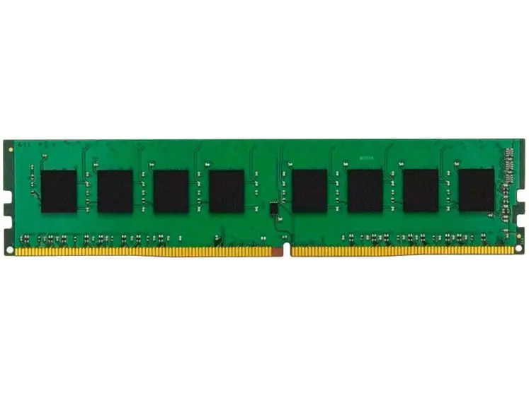

Memória RAM
RAM
A memória RAM é uma tecnologia que permite o acesso aos arquivos armazenados no celular, PC ou notebook. Diferentemente da memória do HD, a RAM não armazena conteúdos permanentemente. O componente é responsável pela leitura dos conteúdos quando requeridos. Ou seja, de forma não-sequencial, por isso, a nomenclatura em inglês vem de Random Access Memory (Memória de Acesso Aleatório, em tradução livre).
Sendo assim, a memória RAM pode ser entendida como um espaço temporário de trabalho, pois, após a tarefa ser realizada, os arquivos (material de estudos) são retirados da memória (mesa) e mantidos no HD (armário).